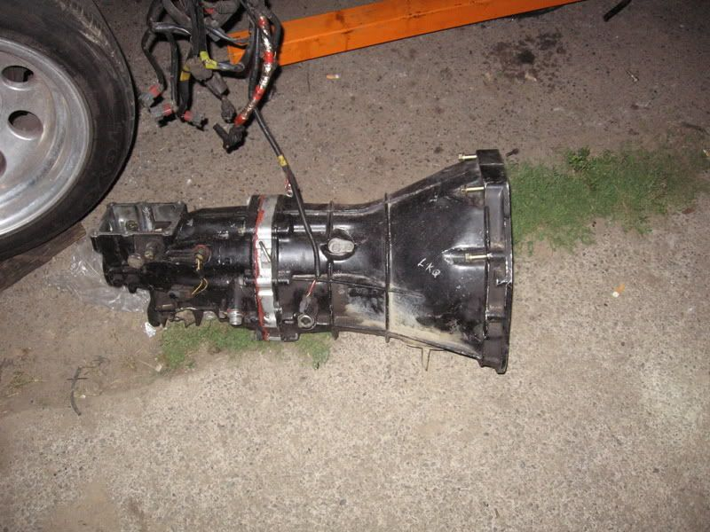

-
I see the part about swapping the bell housing that is not a problem, I am more concerned about the internals or rear of the housing is that different between the tt and the n/a1984 300ZX - 1988 VG30T Engine, Trans, Diff, ECU
1987 300ZX TURBO - ( Parts Car ), 1988 300ZX TURBO - ( Parts Car )
1972 240Z -- Full restore - L28ET L6 Engine from 280zx, T-5 transmission, Rear diff from the 87
1998 Mazda B-2500, And a lot of bikes -
*facepalm* Call Z1 and ask them yourself since no one believes.RXGhost wrote: I see the part about swapping the bell housing that is not a problem, I am more concerned about the internals or rear of the housing is that different between the tt and the n/a"Its the s12's sexy over weight step daughter, the z31" -
They told me the case is different but were not sure how1984 300ZX - 1988 VG30T Engine, Trans, Diff, ECU
1987 300ZX TURBO - ( Parts Car ), 1988 300ZX TURBO - ( Parts Car )
1972 240Z -- Full restore - L28ET L6 Engine from 280zx, T-5 transmission, Rear diff from the 87
1998 Mazda B-2500, And a lot of bikes -
What they mean is the front bell portion is larger for extra clearance on the 250mm flywheel, pathfinders run 250mm flys as it is so its not an issue for us."Its the s12's sexy over weight step daughter, the z31" -
perfect then I will just grab the non turbo one I found local thanks1984 300ZX - 1988 VG30T Engine, Trans, Diff, ECU
1987 300ZX TURBO - ( Parts Car ), 1988 300ZX TURBO - ( Parts Car )
1972 240Z -- Full restore - L28ET L6 Engine from 280zx, T-5 transmission, Rear diff from the 87
1998 Mazda B-2500, And a lot of bikes -
my z32 tranny is an non turbo. works just fine86na2t + holset
feedback
viewtopic.php?f=18&t=6114&hilit=andrew+gardner -
I should have been clearer: what I meant to say was that they TT tranny has the starter mounted in a different spot as opposed to the N/A Z32 tranny. I know the starter is in a different spot than a Z31.nismopu wrote: they all do. Which is why I dont get people sourcing all the parts they do to do the swap. All I did was find a pathfinder 5 speed in the junkyard and remove its bellhousing. Then I swapped it onto the TT tranny I have, that way I didnt have to swap flywheels or starters.
-
[quote]Gregmatic wrote:This does not matter if using the z31 or pathy bellhousing, which is the best way to do it.Originally posted by nismopuHmmm, Whats next?
Full Size Bronco, smashing shit.
84ZXT -
[quote]Gregmatic wrote:Shromy is right. Also n/a z32 or TT, doesn't matter auto or manual they all run the starter underneath on the bellhousing. The manifolds for n/a and the turbo d's end in the same spot.Originally posted by nismopu"Its the s12's sexy over weight step daughter, the z31" -
Has anyone taken the shift cover plate off of the Z32 transmission? I am referring to that black 5 or 6 bolt cover on the top of the tail section. Pictures?
Depending on whats going on in there, I may be able to install some Z31 transmission parts (shift rod or something) and have the shifter located there (several inches further forward of the OEM Z32 shifter locale)."produce first.talk second." -
I have but dont have any pics. I am 95% sure that z31 parts will not work. Might have to do something custom.86na2t + holset
feedback
viewtopic.php?f=18&t=6114&hilit=andrew+gardner -
From what I remember you cant do much with the shifter rod in there but if i get some time in the garage today I will snap some pics of whats under there. Also, check hybridz for the many threads where they were modifying z32 transmissions to mate onto the l28et."Its the s12's sexy over weight step daughter, the z31" -
this is the best that i have, There is one piece missing in the pic that connects the to shafts together
[attachment=0:2pqx0ab9]SSPX0321.jpg[/attachment:2pqx0ab9]86na2t + holset
feedback
viewtopic.php?f=18&t=6114&hilit=andrew+gardner -
I don't have anyway of confirming this but from what I can remember the 2wd nissan v6 pickups have the shifter where that plate is and they're the same length as the z32 tranny which is 29""Its the s12's sexy over weight step daughter, the z31" -
here is a pic of my friends v6 5speed in his vg30et powered HB

^CHECK OUT THAT SICK RTV!!!!"Its the s12's sexy over weight step daughter, the z31"

Copyright © 2006–. All rights reserved. Privacy Policy